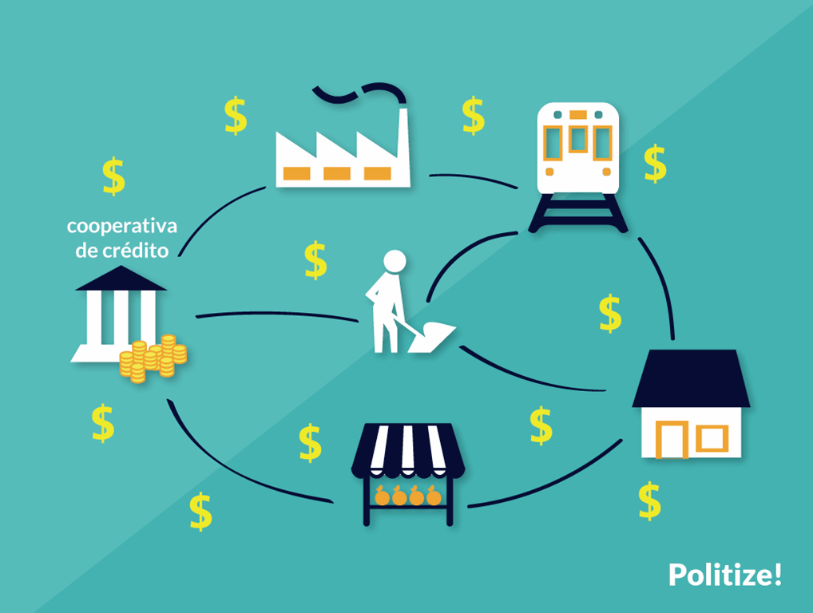

1º – Adesão voluntária e livre As cooperativas são organizações voluntárias, abertas a todas as pessoas aptas a utilizar os seus serviços e assumir as responsabilidades como membros, sem discriminação de sexo ou gênero, social, racial, política e religiosa.
2º – Gestão democrática As cooperativas são organizações democráticas, controladas pelos seus membros, que participam ativamente na formulação das suas políticas e na tomada de decisões. Os homens e as mulheres, eleitos como representantes dos demais membros, são responsáveis perante estes. Nas cooperativas de primeiro grau, os membros têm igual direito de voto (um membro, um voto); as cooperativas de grau superior são também organizadas de maneira democrática.
3º – Participação econômica dos membros Os membros contribuem equitativamente para o capital das suas cooperativas e controlam-no democraticamente. Parte desse capital é, normalmente, propriedade comum da cooperativa. Os membros podem receber, habitualmente, havendo condições econômico financeiras para tanto, uma remuneração sobre o capital integralizado, como condição de sua adesão. Os membros destinam os excedentes a uma ou mais das seguintes finalidades: desenvolvimento da cooperativa, possibilitando a formação de reservas, em parte indivisíveis; retorno aos sócios na proporção de suas transações com as cooperativas e apoio a outras atividades que forem aprovadas pelos associados.

4º – Autonomia e independência As cooperativas são organizações autônomas, de ajuda mútua, controladas pelos seus membros. Se firmarem acordos com outras organizações, incluindo instituições públicas, ou recorrerem a capital externo, devem fazê-lo em condições que assegurem o controle democrático pelos seus membros e mantenham a autonomia da cooperativa.
5º – Educação, formação e informação As cooperativas promovem a educação e a formação dos seus membros, dos representantes eleitos e dos trabalhadores, de forma que estes possam contribuir, eficazmente, para o desenvolvimento das suas cooperativas. Informam o público em geral, particularmente os jovens e os líderes de opinião, sobre a natureza e as vantagens da cooperação.
6º – Intercooperação As cooperativas servem de forma mais eficaz aos seus membros e dão mais força ao movimento cooperativo, trabalhando em conjunto, através das estruturas locais, regionais, nacionais e internacionais.
7º – Interesse pela comunidade As cooperativas trabalham para o desenvolvimento sustentado das suas comunidades através de políticas aprovadas pelos membros.
Na verdade, o cooperativismo já resolveu no passado problemas de muitos
cidadãos, que conjugando esforços e meios de produção, fizeram obras
notáveis. O país conheceu já cooperativas de diversa natureza, tendo,
depois da Independência, se desenvolvido mais o cooperativismo agrícola,
que reúne até hoje cooperativas e associações de camponeses.
Essas cooperativas e associações de camponeses estão integradas numa
confederação de âmbito nacional, as quais, a serem potenciadas, por via da
concessão de crédito, com juros bonificados, podem constituir-se num
sector capaz de contribuir, igualmente, para o combate à pobreza nas zonas
rurais.
Num momento em que se aposta na diversificação da economia, não se deve
subestimar o sector cooperativo, até porque muitos milhares de camponeses
estão organizados, faltando-lhes, entretanto, capital financeiro para
realizarem os seus negócios.
Vale a pena olhar para o cooperativismo como um sector que pode relançar o
agro - negócio. Temos nas cooperativas e associações de camponeses pessoas
com muita experiência e vocação para trabalhar a terra. O crédito à
produção agrícola deve ser encarado como uma prioridade. Que se estudem as
diversas propostas de pessoas com experiência de trabalho no campo e
realmente interessadas no desenvolvimento rural. Há angolanos com ideias e
com iniciativas para que se mude o actual quadro da nossa actividade
agrícola. Que se oiçam esses angolanos e se procurem as vias que possam
fazer com que os camponeses se sintam motivados a produzir. Temos de
acabar com casos, que não são poucos, de produção agrícola que apodrece,
porque não há meios para os evacuar para os mercados. Como se pode
impedir, por exemplo, que os jovens camponeses que vivem nas zonas rurais
não vão para as cidades, quando não se consegue criar condições para que
haja no campo actividade lucrativa. Quem investe em alguma actividade
produtiva espera o retorno do seu investimento. Se os produtos dos
camponeses continuarem a apodrecer no campo, os agricultores nunca se
sentirão motivados para continuar a produzir, advindo daí situações
negativas para muitas famílias. Que as autoridades, em parceria com
organizações e empreendedores ligados à actividade agrícola, coloquem o
agro-negócio no centro da sua agenda governativa e produtiva.
As Sociedades Cooperativas estão reguladas pela Lei 5.764, de 16 de dezembro de 1971, que definiu a Política Nacional de Cooperativismo e instituiu o regime jurídico das Cooperativas.
Cooperativa é uma associação de pessoas com interesses comuns, economicamente organizada de forma democrática, isto é, contando com a participação livre de todos e respeitando direitos e deveres de cada um de seus cooperados, aos quais presta serviços, sem fins lucrativos.
1) É uma sociedade de pessoas.
2) O objetivo principal é a prestação de serviços.
3) Pode ter um número ilimitado de cooperados.
4) O controle é democrático: uma pessoa = um voto.
5) Nas assembleias, o “quorum” é baseado no número de cooperados.
6) Não é permitida a transferência das quotas-parte a terceiros, estranhos à sociedade, ainda que por herança.
7) Retorno proporcional ao valor das operações.
8) Não está sujeita à falência.
9) Constitui-se por intermédio da assembleia dos fundadores ou por instrumento público, e seus atos constitutivos devem ser arquivados na Junta Comercial e publicados.
10) Deve ostentar a expressão “cooperativa” em sua denominação, sendo vedado o uso da expressão “banco”.
11) Neutralidade política e não discriminação religiosa, social e racial.
12) Indivisibilidade do fundo de reserva entre os sócios, ainda que em caso de dissolução da sociedade.
O ingresso nas Cooperativas é livre a todos que desejarem utilizar os serviços prestados pela mesma, desde que adiram aos propósitos sociais e preencham as condições estabelecidas no estatuto (art. 29 da Lei 5.764/71).
a) o valor das quotas-parte não poderá ser superior ao salário mínimo;
b) o valor do capital é variável e pode ser constituído com bens e serviços;
c) nenhum associado poderá subscrever mais de 1/3 (um terço) do total das quotas-parte, salvo nas sociedades em que a subscrição deva ser diretamente proporcional ao movimento financeiro do cooperado ou ao quantitativo dos produtos a serem comercializados, beneficiados ou transformados ou ainda, no caso de pessoas jurídicas de direito público nas Cooperativas de eletrificação, irrigação e telecomunicação;
d) as quotas-parte não podem ser transferidas a terceiros estranhos à sociedade, ainda que por herança.
Neste tipo societário será sempre obrigatória a adoção da expressão “Cooperativa” na denominação, sendo vedada a utilização da expressão “Banco”.
A Sociedade Cooperativa será administrada por uma diretoria ou conselho de administração ou ainda outros órgãos necessários à administração previstos no estatuto, composto exclusivamente de associados eleitos pela assembleia geral, com mandato nunca superior a quatro anos sendo obrigatória a renovação de, no mínimo, 1/3 do conselho de administração.
A Sociedade Cooperativa constitui-se por deliberação da assembleia geral dos fundadores, constantes da respectiva ata ou por instrumento público.
As Normas Brasileiras de Contabilidade e a legislação determinam que a escrituração contábil é obrigatória, para qualquer tipo de cooperativa. Portanto, mesmo uma pequena cooperativa (por exemplo, uma cooperativa de pescadores), deve escriturar seu movimento econômico e financeiro.
Considera-se Cooperativa de Trabalho a sociedade constituída por trabalhadores para o exercício de suas atividades laborativas ou profissionais com proveito comum, autonomia e autogestão para obterem melhor qualificação, renda, situação socioeconômica e condições gerais de trabalho.
A regulamentação das Cooperativas de Trabalhos é determinada pela Lei 12.690/2012.
A Lei 9.867/1999 dispõe sobre a criação e o funcionamento de Cooperativas Sociais, constituídas com a finalidade de inserir as pessoas em desvantagem no mercado econômico, por meio do trabalho, fundamentadas no interesse geral da comunidade em promover a pessoa humana e a integração social dos cidadãos.
As Cooperativas de Crédito têm por objetivo fomentar as atividades do cooperado via assistência creditícia. É ato próprio de uma cooperativa de crédito a captação de recursos, a realização de empréstimos aos cooperados bem como a efetivação de aplicações financeiras no mercado, o que propicia melhores condições de financiamento aos associados.
Os resultados (sobras) decorrentes dos atos cooperativos não são tributáveis pelo IRPJ, conforme Lei 5.764/71, art. 3.
As Sociedades Cooperativas de consumo, que tenham por objeto a compra e fornecimento de bens aos consumidores, sujeitam-se, a partir de 1998, às mesmas normas de incidência dos impostos e contribuições de competência da União, aplicáveis às demais pessoas jurídicas, mesmo que suas vendas sejam efetuadas integralmente a associados (art. 69 da Lei 9.532/97).
As Cooperativas de Crédito, cuja atividade está sob controle do Banco Central do Brasil, são obrigatoriamente tributadas pelo Lucro Real, conforme Lei 9.718/98, art. 14.
A partir de 01.01.2005, as Sociedades Cooperativas que obedecerem ao disposto na legislação específica, relativamente aos atos cooperativos, ficam isentas da Contribuição Social sobre o Lucro Líquido - CSLL.
Havendo circulação de mercadorias ou prestação de serviços tributáveis, a Cooperativa estará sujeita ao ICMS, de acordo com a legislação estadual em que efetuar as operações.
A Cooperativa é considerada estabelecimento industrial quando executa qualquer das operações consideradas como industrialização. Neste caso, deverá recolher o IPI correspondente á alíquota aplicável a seus produtos, dentro dos moldes exigidos pelo Regulamento respectivo.
A Cooperativa será contribuinte do ISS somente se prestar a terceiros serviços tributados pelo referido imposto.
A prestação de serviços a cooperados não caracteriza operação tributável pelo ISS, já que, expressamente, a Lei 5.764/71, em seu artigo 79, especifica que os atos cooperativos não implicam operação de mercado, nem contrato de compra e venda.
As Sociedades Cooperativas deverão pagar o PIS de duas formas:
1) SOBRE A FOLHA DE PAGAMENTO, mediante a aplicação de alíquota de 1% sobre a folha de pagamento mensal de seus empregados.
2) SOBRE A RECEITA BRUTA, a partir de 01.11.1999 (data fixada pelo Ato Declaratório SRF 88/99), com exclusões da base de cálculo previstas pela Medida Provisória 2.113-27/2001, art. 15.
Ficou revogada a isenção da COFINS, prevista na Lei Complementar 70/91, para as Cooperativas.
Portanto, a partir de 01.11.1999 (data fixada pelo Ato Declaratório SRF 88/99), as Cooperativas deverão recolher a COFINS sobre a receita bruta.
Observe-se que, para as Cooperativas de produção agropecuária e as de consumo, estas estarão sujeitas ao PIS e à COFINS não cumulativa (Leis 10.637/2002 e 10.833/2003).
As Cooperativas, mesmo não tendo incidência de Imposto de Renda sobre suas atividades econômicas, estão sujeitas à apresentação da DCTF.
